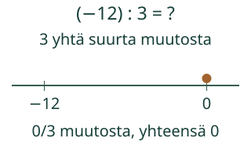
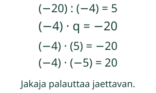
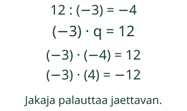

<link rel="stylesheet" href="lesson.css"><section class="b15" data-b15-div>
<section data-teaching-step="1" data-lesson-role="teaching-step">
<div class="intro"><p>Aava etsii luvun, joka palauttaa jaettavan.</p></div><p data-goal><strong>Jaan kokonaisluvut ja tarkistan merkin.</strong></p>
</section>

<section data-teaching-step="2" data-lesson-role="teaching-step">
<fieldset><legend>Jakaja kertaa osamäärä on jaettava</legend><div data-view></div><p data-readout aria-live="polite">Yksi muutos −4. Yhteensä 0, tavoite −12 (0/3).</p><div class="actions" data-primary><button type="button" data-action="step">Seuraava vaihe</button><button type="button" data-action="play">Toista</button><button type="button" data-action="stop">Pysäytä</button><button type="button" data-action="model-reset">Mallin alkuun</button><button type="button" data-action="end">Näytä loppu</button></div><p data-running>Toisto pysäytetty.</p><details data-model-details data-lesson-role="teaching-step"><summary>Vaihda mallia / katso arvot</summary><label>Malli<select data-model><option value="share">Kolme yhtä suurta muutosta</option><option value="same">Negatiivinen jaettuna negatiivisella</option><option value="different">Positiivinen jaettuna negatiivisella</option><option value="positive">Positiivinen jaettuna positiivisella</option><option value="zero">Nolla jaettuna ei-nollalla</option><option value="undefined">Nollalla jako ei ole määritelty</option><option value="zerozero">Myös nolla jaettuna nollalla</option><option value="fraction">Lisä: osamäärä on murtoluku</option><option value="transfer">Lämpötilan muutos tunnissa</option></select></label><div data-table><table><caption>Jakolasku ja sen tarkistus</caption><tbody><tr><th>Jaettava</th><td>−12</td></tr><tr><th>Jakaja</th><td>3</td></tr><tr><th>Osamäärä</th><td>−4</td></tr><tr><th>Tarkistus</th><td>3 · (−4) = −12</td></tr></tbody></table></div></details></fieldset>
</section>

<section data-teaching-step="3" data-lesson-role="teaching-step">
<p data-lesson-role="question"><strong>Pohdi ensin:</strong> Mikä luku kerrottuna jakajalla palauttaa jaettavan?</p>
</section>

<section id="examples" data-lesson-role="worked-example"><section data-teaching-step="4-frame1" data-lesson-role="teaching-step"><h2>Kaksi esimerkkiä ja uusi tilanne</h2><h2>Tarkistus antaa etumerkille merkityksen</h2><p>Kun kokonaismuutos−12 jaetaan kolmeen yhtä suureen muutokseen, yksi on−4: (−4)+(−4)+(−4)=−12. Siksi(−12):3=−4. Mallissa on kolme muutosta, ei negatiivista esinemäärää.</p><p>Kirjoita yleisesti b · q = a, kun a:b=q ja b ei ole0. b on jakaja, q osamäärä, a jaettava. Tarkistuksessa tarvittavat kertolaskut näytetään tällä sivulla. Myöhemmin tuleva kokonaislukujen kertolaskun taito on tuki, ei uusi pakollinen portti.</p></section>
<section data-teaching-step="4-frame2" data-lesson-role="teaching-step"><figure data-lesson-role="worked-example"><figcaption>Toinen esimerkki:(−20):(−4)=5. Viisi muutosta−4 tuottaa−20. Jakaja ja jaettava ovat molemmat negatiivisia; osamäärä on positiivinen.</figcaption></figure></section>
<section data-teaching-step="4-frame3" data-lesson-role="teaching-step"><figure data-lesson-role="worked-example"><figcaption>12:(−3)=−4. Merkin voi perustella jatkamalla tulotaulukkoa: (−3)·2=−6, (−3)·1=−3, (−3)·0=0, (−3)·(−1)=3. Sama muutos jatkuu, kun kerrointa pienennetään.</figcaption></figure></section>
<section data-teaching-step="4-frame4" data-lesson-role="teaching-step"><p><strong>Vältä ansa:</strong> jako ei aina pienennä itseisarvoa eikä tulos ole aina positiivinen. Tarkista aina b · q = a. Ei-nollalukujen samat merkit antavat positiivisen osamäärän, eri merkit negatiivisen. Nollan merkkiä ei luokitella positiiviseksi tai negatiiviseksi.</p><p>0:(−5)=0, koska(−5)·0=0. Mutta6:0 ei ole määritelty:0·q ei voi antaa6. Myöskään0:0 ei ole määritelty: kaikki q-luvut antaisivat0, joten yhtä osamäärää ei määrity. Nollalla jako ei anna nollaa tai ääretöntä.</p></section>
<section data-teaching-step="4-frame5" data-lesson-role="teaching-step"><p>Siirto lämpötilaan: kokonaismuutos−12 astetta kolmessa yhtä pitkän ja yhtä paljon muuttuvan tunnin jaksossa antaa−4 astetta tunnissa.</p></section></section>

<section data-teaching-step="5" data-lesson-role="teaching-step">
<section><h2>Kokeile itse</h2><p>Voit vastata suoraan. Malli, selitykset ja apu ovat valinnaisia; puhetta tai kuuntelua ei tarvita.</p><label>Tehtävä<select data-task><option value="share">Negatiivinen jaettuna positiivisella</option><option value="same">Kahden negatiivisen osamäärä</option><option value="different">Eri merkkiset luvut</option><option value="positive">Kahden positiivisen osamäärä</option><option value="zero">Nolla jaettavana</option><option value="undefined">Nollajakaja</option><option value="zerozero">Nolla jaettuna nollalla</option><option value="fraction">Lisätehtävä: tarkka murtoluku</option><option value="transfer">Lämpötilan muutos tunnissa</option></select></label><p data-question>Laske (−12) : 3. Tarkista, mikä luku kerrottuna kolmella antaa −12.</p><label>Osamäärä tai ei määritelty<input data-answer type="text" inputmode="text" autocomplete="off" maxlength="96"></label><button type="button" data-action="check">Tarkista</button><output data-feedback data-result="neutral" aria-live="polite">Tarkista, kun olet valmis.</output><details data-help data-lesson-role="hint"><summary>Tarvitsen apua</summary><p>Etsi luku q, jolle jakaja · q = jaettava. Esimerkiksi 3 · (−4) = −12, joten (−12):3 = −4. Nollajakaja ei määrää yhtä osamäärää. Kertolaskut ja merkkien perustelu on annettu; niiden muistaminen ei ole aloitusportti.</p><p>Avun kanssa tehty vastaus on tuettua harjoittelua, ei itsenäisen hallinnan todistus.</p></details></section>
</section>

<section data-teaching-step="6" data-lesson-role="teaching-step">
<details data-lesson-role="teaching-step"><summary>Lisää tutkittavaa</summary><p>Tutki lisämallia3:(−2). Osamäärä−3/2 = −1,5 ei ole kokonaisluku, mutta tarkistus(−2)·(−3/2)=3 toimii. Tämä yksi lisämalli ei ole yleinen murtolukujen jakamisen koe.</p></details>
</section>
<details data-lesson-role="teacher-note"><summary>Opettajalle ja paperille</summary><p>Luokat 7–9. Tavoite:Laskee nimettyjen kokonaislukujen osamäärän, perustelee etumerkin jakaja×osamäärä=jaettava-yhteydellä ja erottaa nollajaettavan nollajakajasta.</p><p>Kirjoita korteille jaettava, jakaja ja ehdotettu osamäärä. Rakenna tarkistus jakaja×osamäärä=jaettava. Tarkista luku ja merkki yhdessä. Negatiivinen luku kuvaa muutosta tai suuntaa; älä pyydä tekemään negatiivista määrää laatikoita.</p><p>Pakolliset esitiedot ovat M-DIV-01 ja M79-INT-01. M79-INT-MUL on vahva tuki; sen myöhempi paikka valinnassa ei estä aloittamista. Kaikki tarvittavat tulot annetaan mallissa. Kanoninen rooli on atomic; emme lisää esitietoja tai kirjoita hallintatiloja.</p><p>Mallit käyttävät kokonaislukuja: jaettava−36…36 ja jakaja−9…9. Nollajakaja hylätään lukulaskennassa ja opetetaan erikseen määrittelemättömänä. Tasajakokuvan erien määrä on aina positiivinen. Lisämalli3:(−2) tukee tarkkaa murtoluku- tai desimaalivastausta, ei yleistä rationaalilukujen jakamisen hallintaa.</p><p>Desimaalin pilkku tai piste ja samanarvoinen murtoluku käyvät. Syötössä enintään96merkkiä, enintään18numeroa kokonaisosassa tai murtoluvun osoittajassa ja nimittäjässä, enintään9desimaalipaikkaa. Ei laskulausekkeita, eksponenttimuotoa tai pyöristystä.</p><p>Vaihetoisto on esitystapa, ei fyysisen tapahtuman mittaus tai aikaraja. Ei negatiivisia fyysisiä esinemääriä. Paikallinen vastaus ei osoita itsenäistä, viivästettyä tai formaalia hallintaa. Ei henkilöhistoriaa, verkkotallennusta tai seurantaa. Ihmis-/oppilas-/vaikuttavuus-/täyden manuaalisen saavutettavuuden/VoiceOverin tai julkaisun hyväksyntää ei ole tehty.</p></details>
<section data-teaching-step="7" data-lesson-role="teaching-step">
<p data-lesson-role="question"><strong>Lopuksi:</strong> Miksi0:(−3)=0 mutta3:0 ei ole määritelty? Perustele kertolaskulla.</p>
</section>
<noscript data-lesson-role="metadata"><p>Alkukuva, arvot ja ratkaistut esimerkit toimivat ilman JavaScriptiä. Toisto ja paikallinen tarkistus tarvitsevat JavaScriptin. Voit vastata samoihin tehtäviin paperille.</p></noscript></section>
